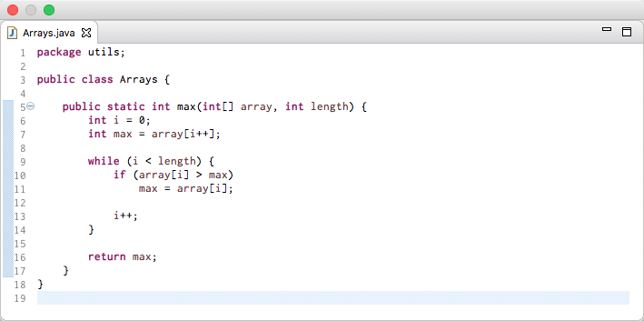
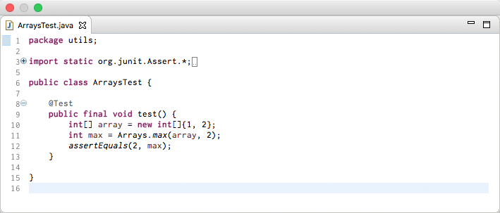
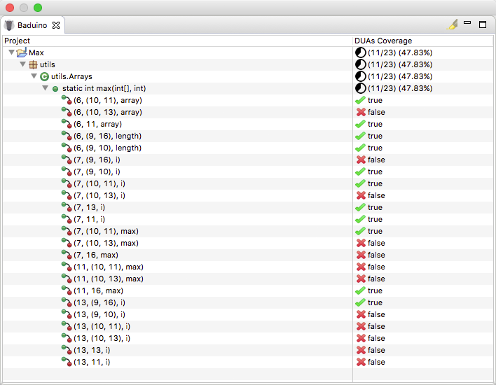

Example
How to run?
The Max class has a method that receive two parameters (an array of integers and an integer with the array length) and return the maximum array value.
Source code
The test case below was done with JUnit and this check if the return of max([1,2], 2) is 2.
Test class
To get the DUAs coverage it is necessary to run the tests with JUnit. This requires a new instance of JVM (Java Virtual Machine) with project classpath and BA-DUA as JavaAgent to instrument all classes used by tests and collect DUAs coverage.
The BA-DUA, responsible for classes instrumentation, is also takes care to store the coverage data after the tests ending, saving coverage in a file called coverage.xml at the .baduino/ folder in the root project.
After you get the coverage in XML, the plugin will show DUAs coverage on interface.
TThis procedure is done by right click on Project → Baduino → Run Tests.
To visualize DUAs, right Click on project/package/class → Project/Package/Class Visualization
The visualization is hierarchical
By clicking in Project Visualization will be shown whole DUAs coverage of the project, and so on.
Plugin interface
On the interface, its possible to click on DUAs and the Definition lines and Use lines will be highlighted in the source code like is shown below. Covered DUAs and uncovered DUAs will be highlighted of green and red, respectively.
Also is possible to remove all highlights by clicking on Remove Highlight in the upper right corner of the View.
Covered DUA